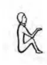

Rune Grimoire
Pertho
Modern Relevance
Perthro represents chance, fate, and risk. It is a roll of the dice, reminding us that random events connect to destiny. This rune advises balancing boldness with wariness.
Tree, Element, and Deity
Tree: beech
Element: water
Deity: Frigg
Meaning: womb; fate or destiny
Names Across Dialects
| Dialect | Word | Meaning |
|---|---|---|
| Proto-Germanic | perthro | Device for casting lots |
| Gothic | pairthra | Dice cup |
| Old English | peordh | Chess man (?) |
| Old Norse | (not in Norse row) | Functions absorbed by other staves |
| Icelandic | Perð, Plástur | Lot, bandage |
| Norwegian | Pertra | Device for casting lots |
Phonetic value: p
Esoteric interpretation: divination as an indicator of ørlög, the "primal laws"
Ideographic interpretation: the dice cup, a device used for casting lots
The Force of Ørlög
Perthro is a cultic symbol for the force of ørlög functioning throughout the multiverse and the way in which mortals and gods may investigate its workings. Ørlög is most often translated by the word "fate," but this is much too simplistic and unfortunately loaded with connotations of predestination found in Christian dogma. This sense is totally lacking in the Norse term.
Ørlög literally means "primal layers": the layers (Old Norse lög: "laws") of past or former action indicated by the prefix ør-, which signifies the most primal or basic form of something in time or space. These self-determined layers of past action are the laws by which gods and mortals are governed. These are not the immutable laws of nature but rather the immutable laws by which the laws of wights are formed by past action and by precedent. This cosmic principle is at the root of Germanic common law. It is a concept much akin to the Sanskrit karma and is contrary to predestination.
It is possible that the name originally referred to a fruit-bearing tree of some kind, in contrast with the evergreen Eihwaz, and that divinatory devices and staves were carved from the wood of this tree.
The Mystery of the Nornir
The P-rune contains the mystery of the Nornic laws. The Nornir are the medium through which action is received and transmuted into a projectable but essentially unaltered form and returned to the sphere from which that action was received. This is the rune of time, and this idea is also expressed by the Nornir. Their names are Urdhr ("that which has become"), Verdhandi ("that which is becoming"), and Skuld ("that which should become"), a non-past/present concept.
Nornic force defines an aspect of the laws of cause and effect in the multiverse, and an understanding of this force is indispensable in the working of runecraft.
Divination and Synchronicity
The mystery of divination, and of synchronicity, is central to the P-rune. By the art of divination, the vitki is able to investigate personal or transpersonal ørlög and become aware of the Skuld-force as well as the influences of Urdhr and Verdhandi.
Perthro is the great pattern of cosmic becoming. It represents the paradigm along which resistance between forces is organically governed and balanced. The P-rune is perceived as a constant change that always remains the same.
Rune Character
Perthro is a rune used in divination. Through this rune, one can gain the knowledge and wisdom of other runes. This rune acts as protection against the destructive forces of certain runes. Through Perthro, we can intuitively discover lost knowledge of all of the runes. Perthro is the rune of meditation.
Crystal Pairings
- Onyx is the stone used with this rune
Keywords
- Ørlög
- Time
- Urdhr, Verdhandi, Skuld
- Cause and effect
- Evolution, change
Galdr
perthro perthro perthro
pu pa pi pe po
purdh pardh pirdh perdh pordh
po pe pi pa pu
Stadha
Sit on the ground with back straight. Bring knees up with feet flat on the ground. Rest elbows on knees with forearms slanted forward. Face west.

Magickal Workings
- Perception of ørlög
- Divination
- Placing runic forces in the stream of Nornic law
- To evolve ideas or events as a magickal act
- Protection against destructive forces of certain runes
- Intuitive recovery of lost runic knowledge
- Meditation
Constructive Applications
Used in divination to gain the knowledge and wisdom of other runes. Acts as protection against the destructive forces of certain runes. Through Perthro, lost knowledge of all the runes can be intuitively rediscovered. The rune of meditation.